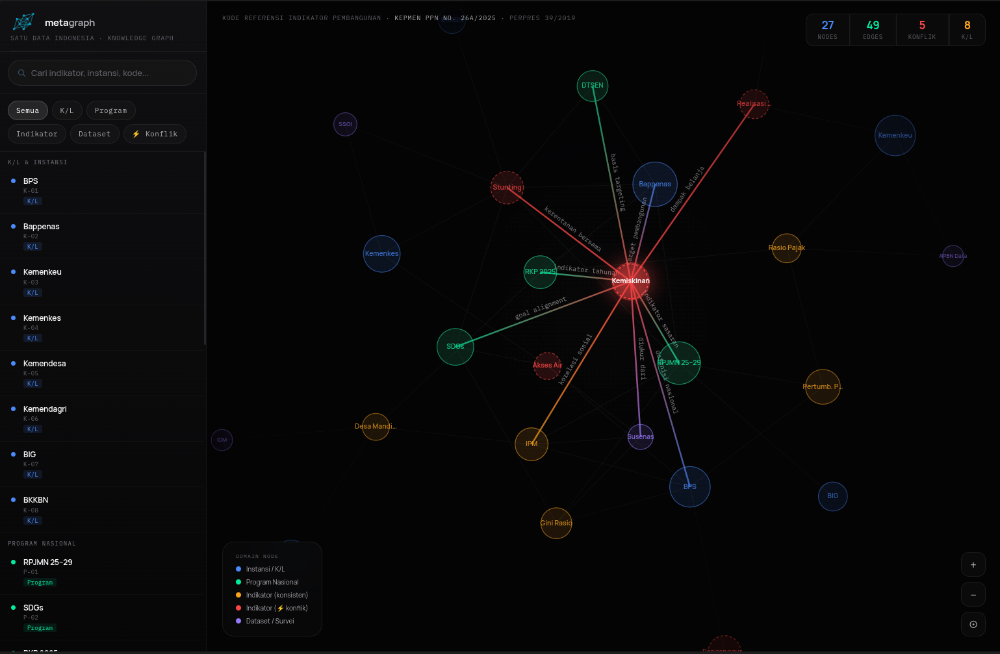

01
Auto Data Transformation
Normalize raw institutional data into harmonized structures with less manual prep.
AI-assisted data harmonization
Harmonize metadata, indicators, and data definitions across ministries, agencies, and local governments.

Core product features
Metagraph combines automated data transformation, connector orchestration, knowledge graph mapping, and multi-agent review in a single harmonization workflow.
Normalize raw institutional data into harmonized structures with less manual prep.

Link spreadsheets, APIs, and operational systems into one governed ingestion layer.

Map entities, indicators, and definitions into a shared semantic backbone.

Run parallel reasoning paths to surface conflicts, alternatives, and review-ready recommendations.
The harmonization gap
The core issue is not a lack of data, but the absence of shared meaning behind it. Public-sector data faces critical fragmentation challenges across institutions.
Metadata lives across documents, spreadsheets, reports, and legacy systems.
Definitions, units, and methodologies vary between institutions.
Harmonization requires slow, multi-layer coordination.
Rethinking Solutions
Extraction, LLMs, and RAG help read data, but they are insufficient for true harmonization across government institutions.
Captures data, but not relationships.
Explains data, but lacks consistency.
Retrieves data, but does not resolve conflicts.
Harmonization needs
A system that builds context, reasons through conflicts, and supports accountable decisions.
Turn documents into usable metadata.
Understand relationships between indicators and datasets.
Detect conflicts, overlaps, and inconsistencies.
Keep decisions auditable and accountable.
Proposed solution
Metagraph integrates extraction, knowledge structure, reasoning, and human validation in one workflow.
Connect documents and data sources
Extract metadata automatically
Detect differences across institutions
Generate alignment recommendations
Validate through human review
Designed for integration
Separate core logic from external systems, so institutions can connect without replacing existing infrastructure.
No need to replace existing systems.
Expected impact
Accelerating harmonization, improving metadata consistency, and strengthening decision accountability.
Reduce manual effort in comparing metadata.
Align indicators across institutions.
Prepare data for cross-system integration.
Every step is traceable and auditable.
Align data. Strengthen decisions.